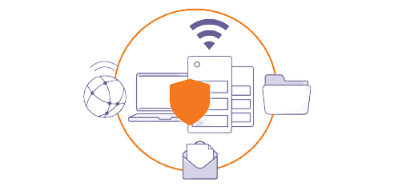

تكويد تقدم لكم حماية السيرفر الخاص بك او سيرفر شركة نقوم بمتابعة حالة السيرفر وحمايته من الهجوم ومنع حدوث تلف مفاجأ في ملفات الخادم
*متابعة دقيقة لحالة أجزاء الخادم لمنع حدوث تلف مفاجئ
*تحليل مشاكل الرسائل ومنع الرسائل البريدية المزعجة SPAM
*تنصيب شهادة أمان SSL مجانية للخادم لتشفير الإتصال
*تأمين مواقع الخادم من ثغرات البرمجيات المشهورة
*متابعة دقيقة لبرمجيات الخادم عبر أنظمة مراقبة متقدمة
*تحليل هجمات حجب الخدمة DDOS و تقديم أنسب الحلول لها
*تنبيه عبر الرسائل القصيرة و المكالمات الهاتفية للطوارئ
*تنصيب برمجيات متقدمة لاكتشاف و حذف الملفات الضارة - مدفوع
تحسين الأداء:
ليس هناك ما هو أفضل من إعدادات جيّدة للخادم تٌناسب احتياجات مواقعك و تمنحها أفضل أداء ، الإداريون لدينا يعرفون جيداً كيفية التعامل مع الخوادم ذات الضغط و الحمل العالي و يقدّمون الحل المناسب دائماً للتخفيف من الأحمال و لضمان عدم توقّف الخادم بسبب تلك الأحمال .
تقديم النصيحة:
نساعدك دائماً في العثور على الحلول الصحيحة عبر مجموعة من الخبراء في هذا المجال ، حيث تتلقى العديد من النصائح فيما يتعلق بتطوير أعمالك و توفير مزيداً من الاستقرار لخادمك و مواقعك على الإنترنت .
رصد استباقي:
هناك العديد من المشاكل لا يُمكن منع حدوثها.
1-أخذ نسخة إحتياطة: النسخ الاحتياطية هي شيئ أساسي ويفضل أن تكون بشكل دوري وتكون مخزنة في أحد وسائط التخزين الخارجية مثل هاردسك خارجي أو usb او على كلاود مثل الGoogle Drive ..الخ ولا تكون مخزنة على نفس السيرفر وإلا مالفائدة من ذلك سيقوم المخترق بمسحها وتفقد البيانات الخاصة بك على ذلك السيرفر.
2- إغلاق البورتات: المقصود بالبورت port هو المنفذ أو الباب المسؤول عن التواصل بين المستخدم و الخدمة على ذلك المنفذ لتبادل البيانات ، على سبيل المثال منفذ 80 هو منفذ http المسؤول عن التصفح للمواقع ، لذلك يتوجب عليك اغلاق المنافذ الغير مستخدمة وفتح البورتات التي تحتاجها فقط وتم تركيب خدمات عليها.
3- تحديث البرمجيات على السيرفر: لاشك أن السيرفر يحتوي على برامج تقوم بتشغيل خدمات معينة مثلا الأباتشي سيرفر وغيره ، هذه البرمجيات يتوفر منها نسخ بعضها مصاب بثغرات تمكن المخترق من استغلالها و الوصول اليها لذلك تحديث مثل هذه البرمجيات أمر ضروري لإغلاق الثغرات التي بها و يكون عملية اختراقها صعب نوعا ما.
4- الجدار الناري: لاشك أن وجود الجدار الناري أمر ضروري سواء كان سوفتوير او هاردوير فهو يقوم بعمل فلترة للإتصالات أي بمعنى يقوم بعملية بتمرير ومنع الاتصالات اليه لذلك ضبط الاعدادات الخاصة به أمر ضروري للحصول على تأمين جيد للسيرفر .
5- التأكد من الصلاحيات: إن التأكد من الصلاحيات المعطاة للملفات و التصاريح يحمي من الوصول الى معلومات قاعدة البيانات ومنع المستخدمين و الغير مصرح لهم بالتعديل على تلك الملفات وهذا ما نجده في المواقع التي تستخدم سكربت wordpress فإن اهمال التصاريح يمكن المستخدم من تصفح الملفات ومعرفة معلومات لايجب على احد سوا مدير السيرفر معرفتها.